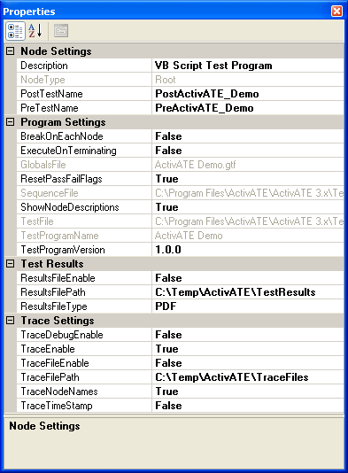
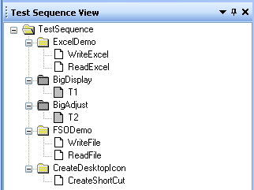

The test program properties are those that relate to the program as a whole. To view them in the Properties Page, click on the root node in the Test Sequence View. If the Properties Page is not visible, right-click anywhere in the Test Sequence View and click Node Properties. The following shows an example of the properties for a test program:

Click on the following links for a detailed description of each property.
Node Settings: Description | NodeType | PostTestName | PreTestName
Program Settings: BreakOnEachNode | ExecuteOnTerminating | GlobalsFile | ResetPassFailFlags | SequenceFile | ShowNodeDescriptions | TestFile | TestProgramName | TestProgramVersion
Test Results: See Test Results File
Trace Settings: TraceDebugEnable | TraceEnable | TraceFileEnable | TraceFilePath | TraceNodeNames | TraceTimeStamp
A brief description of the test program. If a description was entered while creating a new test program, it will appear here. Otherwise the default description, "VB Script Test Program", will be used. To change this property, simply delete the current description and type in a new description.
The type of node selected, either "Root", "Group", or "Test". This property is read-only.
The name of the VBScript PostTest subroutine for the test program. This method is the last method to execute when the test program is run and is generally used to do any clean-up before exiting the program.
The name of the VBScript PreTest subroutine for the test program. This method is the first method to execute when the test program is run and is generally used to do any initialization at the beginning of the program.
If true, the test program will "break" before the first line of executable code at the start of each test node. If the test was run in debug mode, the user will have the same capabilities as when hitting a breakpoint (i.e., watch window, step through code). If the test was run normally (not in debug mode), the test will simply pause at the start of each node. To resume the test program, simply click the run button again.
If true, the OnTerminating() function will be executed if the user stops the test early (by clicking the stop button). It is up to the user to define OnTerminating() in their test program, either in the main test script file (.tpf) or in the globals file (.gtf). When the user clicks stop, the current test node will finish executing and then OnTerminating() will be called. It may be desirable to include important cleanup code in OnTerminating(), such as resetting an instrument or releasing a VXI resource. The function template that should be used for OnTerminating() is as follows:
Function OnTerminating
' ToDo: Put your code here
OnTerminating = True
End Function
The full path of the test program's globals (.gtf) file. If no globals file is used, this field will be blank. This property is read-only.
If true, the previous test run's pass/fail flags for the test nodes in the Test Sequence View will be cleared at the start of each test program run. If false, the pass/fail flag for each test node will not be reset until the next time the node is executed. The default is true.
The full path of the test program's sequence (.seq) file. This property is read-only.
True to display the description for each group and test node in the tree view next to the node name. The default is true.
Example:
| ShowNodeDescriptions = true | ShowNodeDescriptions = false |
|
|
 |
The full path of the test program's main VBScript test (.tpf) file. This property is read-only.
The name of the test program that was entered while creating a new test program. This property is read-only.
The version of the test program. The default value is "1.0.0" when a new test program is created, but you may change the version format as required.
Enables/disables debug logging to the Script Trace Log window and trace file. If this property is set to true AND TraceEnable is set to true, any Tracelog.Debug calls from the test script will be output to the Script Trace Log. If both this property and TraceFileEnable are true, the Tracelog.Debug calls will also be written to the trace file. The default is false.
Enables/disables trace logging to the Script Trace Log window. If this property is set to false, any Tracelog.Writeline and Tracelog.Debug calls from the test script will not be output to the Script Trace Log. The default is true.
Enables/disables trace logging to a file. If this property is set to true, any Tracelog.Writeline and Tracelog.Debug (if TraceDebugEnable is true) calls from the test script will be written to the file specified by TraceFilePath. The default is false.
The path of the file written to when TraceFileEnable is true. The default path is C:\Temp\ActivATE\TraceFiles. To change this property, simply delete the current path and type in a new path. If a folder in the path does not exist, it will automatically be created when the file is written. The name of the file is predefined as "Trace_TIU<TIU #>.txt" and cannot be changed. For example, a test program that is run on TIU 8 will write to a file named "Trace_TIU8.txt". If the file does not exist, it will be created. If the file does exist, the new data is appended to the end of the existing file.
If true, the name of the node whose function is making the Tracelog.Writeline or Tracelog.Debug call is included in the output line. If false, the node name is not included. The default is true.
Example: A test node named Test1 in Group1 makes the call Tracelog.Writeline "Hello World".
Output if TraceNodeNames = true: Group1.Test1: Hello World
Output if TraceNodeNames = false: Hello World
If true, the current time is prepended to the output line. If false, the time is not included. The default is false.
Example: A test node named Test1 in Group1 makes the call Tracelog.Writeline "Hello World".
Output if TraceTimeStamp is false: Group1.Test1: Hello World
Output if TraceTimeStamp is true: 5:41:53 PM Group1.Test1: Hello World
See Also
Properties Page | Test Node Properties | Group Node Properties
EADS North America Test and Services
Last updated on 3/27/08 by L. Anhalt